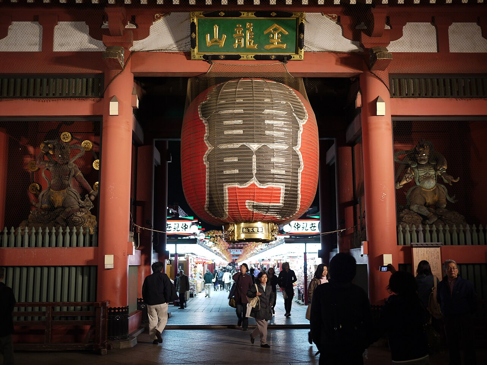
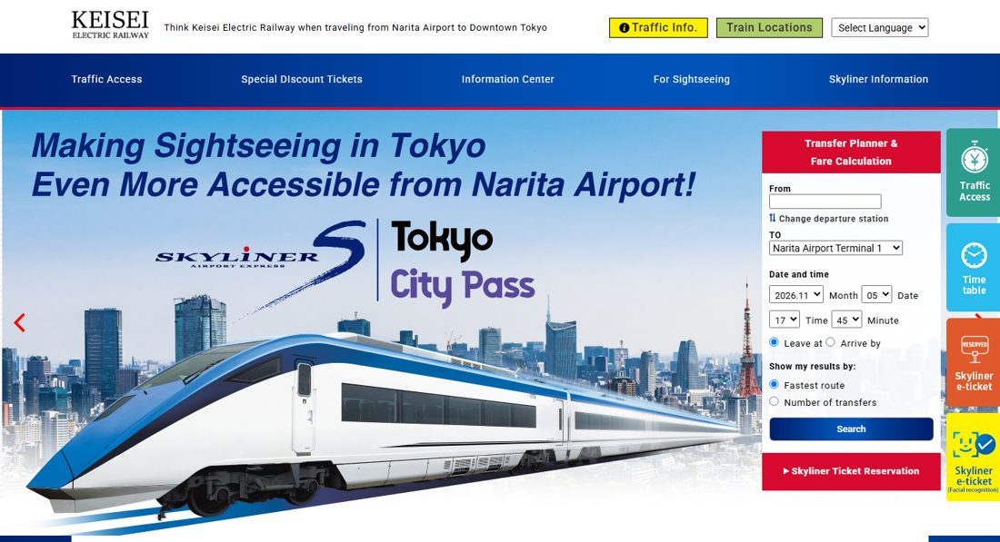
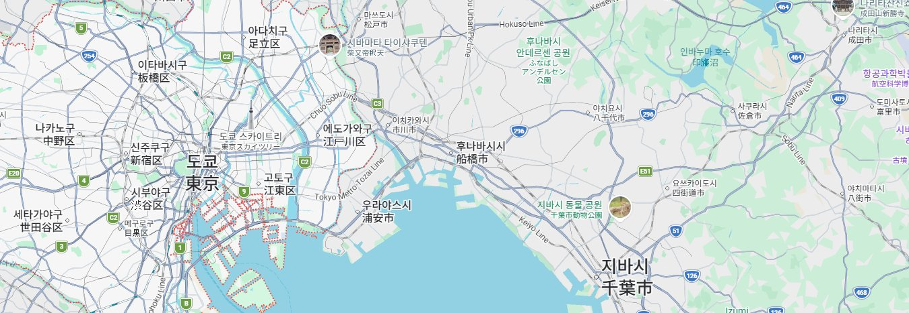

<title>도쿄 늦가을 2박 3일</title>
<meta name="claude:viewport-fit-sides" content="cover">
<link rel="preconnect" href="https://fonts.googleapis.com">
<link rel="stylesheet" href="https://fonts.googleapis.com/css2?family=Barlow+Condensed:wght@500;600;700&family=Black+Han+Sans&family=IBM+Plex+Sans+KR:wght@400;500;600;700&family=Shippori+Mincho:wght@600;800&display=swap">
<style>
/* Layout: 여행사 팸플릿. 사진 표지 → 탭 → 하루 일정표. 이동 구간은 일본 승차권(切符) 모양으로 표시 */
:root{
  --night:#14213d; --night-2:#1f3160; --ginkgo:#f2b52a; --torii:#c63d2d; --sea:#1f7a9c;
  --paper:#f3f5f8; --card:#ffffff; --ink:#1b2438; --muted:#5c6780; --line:#dde2eb; --ticket:#fff6d9; --ticket-line:#d9b85a;
  --display:"Black Han Sans","Apple SD Gothic Neo","Malgun Gothic",sans-serif;
  --body:"IBM Plex Sans KR","Apple SD Gothic Neo","Malgun Gothic",sans-serif;
  --num:"Barlow Condensed","IBM Plex Sans KR","Malgun Gothic",sans-serif;
  --jp:"Shippori Mincho","Yu Mincho",serif;
  color-scheme:light;
}
*{box-sizing:border-box}
body{background:var(--paper);color:var(--ink);font:400 16px/1.65 var(--body);margin:0}
body::before{content:"";position:fixed;inset:0 0 auto;height:env(safe-area-inset-top,0px);z-index:10;background:var(--night)}
img{display:block;max-width:100%}
a{color:var(--sea)}
:focus-visible{outline:3px solid var(--ginkgo);outline-offset:2px}
.wrap{max-width:1120px;margin:0 auto;padding-left:max(16px,env(safe-area-inset-left,0px));padding-right:max(16px,env(safe-area-inset-right,0px))}

/* 표지 */
.cover{position:relative;background:var(--night);color:#fff;overflow:hidden}
.cover img{position:absolute;inset:0;width:100%;height:100%;object-fit:cover;object-position:50% 45%}
.cover::after{content:"";position:absolute;inset:0;background:linear-gradient(90deg,rgba(13,21,42,.94) 0%,rgba(13,21,42,.72) 42%,rgba(13,21,42,.08) 76%)}
.cover .wrap{position:relative;z-index:1;padding-block:64px 56px}
.cover .kanji{font:800 18px/1 var(--jp);letter-spacing:.3em;color:var(--ginkgo)}
.cover h1{font:400 clamp(44px,8vw,86px)/1.08 var(--display);margin:16px 0 18px;text-wrap:balance;max-width:11em}
.cover p{font-size:clamp(16px,2vw,19px);max-width:30em;margin:0 0 26px;color:#e6eaf3}
.facts{display:flex;flex-wrap:wrap;gap:10px 28px;margin:0;padding:0;list-style:none}
.facts li{display:flex;flex-direction:column;min-width:0}
.facts b{font:600 13px/1.4 var(--body);color:var(--ginkgo);letter-spacing:.04em}
.facts span{font:600 clamp(20px,2.4vw,25px)/1.25 var(--num);letter-spacing:.01em}
.draft{display:inline-block;background:var(--ginkgo);color:var(--night);font:700 13px/1 var(--body);padding:7px 10px;margin-bottom:22px}

/* 탭 */
.tabs{position:sticky;top:env(safe-area-inset-top,0px);z-index:9;background:var(--night);box-shadow:0 2px 10px rgba(10,16,32,.28)}
.tabs .wrap{display:flex;gap:2px;overflow-x:auto}
.tabs button{appearance:none;border:0;background:none;color:#c7d0e4;font:600 16px/1.2 var(--body);padding:16px 18px 14px;border-bottom:4px solid transparent;cursor:pointer;white-space:nowrap;flex:1 0 auto}
.tabs button small{display:block;font:500 13px/1.2 var(--num);letter-spacing:.06em;margin-bottom:2px;color:#93a0bd}
.tabs button:hover{color:#fff}
.tabs button[aria-selected=true]{color:#fff;border-bottom-color:var(--ginkgo)}
.tabs button[aria-selected=true] small{color:var(--ginkgo)}

main{padding-block:34px 56px}
h2{font:400 clamp(28px,4vw,40px)/1.2 var(--display);margin:0;text-wrap:balance}
h3{font:400 24px/1.25 var(--display);margin:0}
.sec{margin-top:44px}
.sec-h{margin-bottom:16px}
.sec-h p{margin:6px 0 0;color:var(--muted)}

/* 한눈에 보기 */
.daycards{display:grid;grid-template-columns:repeat(3,minmax(0,1fr));gap:14px;margin-top:18px}
.daycard{appearance:none;border:0;padding:0;text-align:left;cursor:pointer;background:var(--night);color:#fff;position:relative;overflow:hidden;min-height:310px;display:flex;flex-direction:column;justify-content:flex-end;font:inherit}
.daycard img{position:absolute;inset:0;width:100%;height:100%;object-fit:cover;transition:transform .35s ease}
.daycard:hover img{transform:scale(1.04)}
.daycard::after{content:"";position:absolute;inset:0;background:linear-gradient(180deg,rgba(13,21,42,.05) 25%,rgba(13,21,42,.92) 82%)}
.daycard div{position:relative;z-index:1;padding:18px}
.daycard .d{font:600 15px/1.2 var(--num);letter-spacing:.06em;color:var(--ginkgo)}
.daycard h3{margin:6px 0 6px;font-size:27px}
.daycard p{margin:0;font-size:15px;line-height:1.5;color:#e6eaf3}
.split-tag{display:inline-block;font:700 12px/1 var(--body);color:var(--night);background:var(--ginkgo);padding:5px 7px;margin-top:10px}

.mapbox{position:relative;background:var(--card);border:1px solid var(--line)}
.mapbox img{width:100%}
.pin{position:absolute;transform:translate(-50%,-50%);width:15px;height:15px;border-radius:50%;border:3px solid #fff;box-shadow:0 1px 5px rgba(0,0,0,.5);background:var(--c)}
.pin span{position:absolute;left:50%;bottom:calc(100% + 5px);transform:translateX(-50%);background:var(--night);color:#fff;font:600 13px/1 var(--body);padding:5px 7px;white-space:nowrap}
.pin.below span{bottom:auto;top:calc(100% + 5px)}
.pin.edge span{left:auto;right:-4px;bottom:auto;top:calc(100% + 5px);transform:none}
.legend{display:flex;flex-wrap:wrap;gap:6px 18px;padding:10px 14px;font-size:14px;color:var(--muted);border-top:1px solid var(--line)}
.legend i{display:inline-block;width:11px;height:11px;border-radius:50%;margin-right:6px;background:var(--c)}

.tablewrap{overflow-x:auto;background:var(--card);border:1px solid var(--line)}
table{border-collapse:collapse;width:100%;min-width:620px;font-size:15px}
th,td{padding:13px 16px;text-align:left;vertical-align:top;border-bottom:1px solid var(--line)}
thead th{background:var(--night);color:#fff;font:600 15px/1.35 var(--body)}
tbody th{font-weight:600;color:var(--muted);white-space:nowrap}
tr:last-child>*{border-bottom:0}
.money{font:700 22px/1.2 var(--num);font-variant-numeric:tabular-nums}

.todo{display:grid;grid-template-columns:repeat(3,minmax(0,1fr));gap:14px}
.todo div{background:var(--card);border-top:4px solid var(--c,var(--torii));padding:15px 16px}
.todo b{display:block;font-weight:700;margin-bottom:4px}
.todo p{margin:0;font-size:15px;color:var(--muted)}

/* 일자 배너 */
.banner{position:relative;color:#fff;background:var(--night);overflow:hidden;min-height:310px;display:flex;align-items:flex-end}
.banner img{position:absolute;inset:0;width:100%;height:100%;object-fit:cover}
.banner::after{content:"";position:absolute;inset:0;background:linear-gradient(180deg,rgba(13,21,42,.08) 15%,rgba(13,21,42,.9) 88%)}
.banner>div{position:relative;z-index:1;padding:26px;max-width:760px}
.banner .d{font:600 18px/1.2 var(--num);letter-spacing:.06em;color:var(--ginkgo)}
.banner h2{font-size:clamp(32px,5vw,50px);margin:6px 0 8px}
.banner p{margin:0;color:#e6eaf3}

.stats{display:grid;grid-template-columns:repeat(4,minmax(0,1fr));background:var(--card);border:1px solid var(--line);border-top:0}
.stats div{padding:14px 18px;border-left:1px solid var(--line);min-width:0}
.stats div:first-child{border-left:0}
.stats b{display:block;font:500 13px/1.4 var(--body);color:var(--muted)}
.stats span{font:700 22px/1.25 var(--num);font-variant-numeric:tabular-nums}

.routeline{display:flex;background:var(--card);border:1px solid var(--line);border-top:0;padding:20px 12px 16px;overflow-x:auto}
.routeline div{flex:1 0 94px;position:relative;text-align:center;font-size:14px;font-weight:600;padding-top:20px;line-height:1.35}
.routeline div::before{content:"";position:absolute;top:6px;left:0;right:0;height:4px;background:var(--c,var(--torii))}
.routeline div:first-child::before{left:50%}
.routeline div:last-child::before{right:50%}
.routeline div::after{content:"";position:absolute;top:0;left:50%;margin-left:-8px;width:16px;height:16px;border-radius:50%;background:#fff;border:4px solid var(--c,var(--torii))}

/* 2일차 선택 */
.switch{display:grid;grid-template-columns:repeat(2,minmax(0,1fr));gap:10px;margin-bottom:20px}
.switch button{appearance:none;background:var(--card);border:2px solid var(--line);padding:13px 16px;text-align:left;cursor:pointer;font:inherit;color:var(--ink)}
.switch button b{display:block;font:400 20px/1.3 var(--display)}
.switch button span{font-size:14px;color:var(--muted)}
.switch button[aria-pressed=true]{background:var(--night);border-color:var(--night);color:#fff}
.switch button[aria-pressed=true] span{color:#d5dcec}

/* 일정표 */
.timeline{display:flex;flex-direction:column;gap:14px;margin-top:22px}
.stop{display:grid;grid-template-columns:minmax(0,5fr) minmax(0,7fr);align-items:start;background:var(--card);border:1px solid var(--line)}
.stop>img{width:100%;height:270px;object-fit:cover}
.stop .txt{padding:20px 22px;min-width:0}
.time{font:700 19px/1 var(--num);color:var(--torii);letter-spacing:.03em}
.stop h3{margin:7px 0 2px}
.jp{font:600 14px/1.4 var(--jp);color:var(--muted)}
.stop p{margin:9px 0 0}
.chips{display:flex;flex-wrap:wrap;gap:6px;margin-top:11px}
.chips span{font-size:13px;font-weight:500;line-height:1;padding:6px 8px;background:var(--paper);color:var(--muted)}
details{margin-top:13px;border-top:1px solid var(--line)}
summary{cursor:pointer;font-weight:700;padding:11px 0 2px;color:var(--night-2)}
summary:hover{color:var(--torii)}
details ul{margin:8px 0 2px;padding-left:20px}
details li{margin:4px 0}
details .links{display:flex;flex-wrap:wrap;gap:6px 14px;margin-top:10px;font-size:14px;font-weight:600}

/* 승차권 */
.tmain{min-width:0}
.mini{grid-column:2/-1;display:flex;flex-wrap:wrap;align-items:center;gap:6px 8px;font-size:14px}
.mini b{font-weight:700}
.mini b.xfer{color:var(--torii)}
.pill{font-size:13px;font-weight:600;line-height:1.2;padding:5px 9px;border-radius:3px}
.route{display:flex;flex-direction:column;gap:8px;margin-top:10px}
.leg{border-left:6px solid var(--lc);padding-left:14px;margin-left:6px}
.leg-h{display:flex;flex-wrap:wrap;gap:0 10px;align-items:baseline;margin-bottom:4px}
.leg-h span{font-size:14px;color:#6b5a2b}
.leg ol{list-style:none;margin:0;padding:0}
.leg li{position:relative;margin:0;padding:2px 0;font-size:14px;line-height:1.4}
.leg li::before{content:"";position:absolute;left:-23px;top:7px;width:12px;height:12px;border-radius:50%;background:#fff;border:3px solid var(--lc)}
.leg li.end{font-weight:700}
.leg li small{font:600 12px/1 var(--jp);color:#7a6a3c;margin-left:4px}
.transfer{background:#fff;border:1px dashed var(--torii);padding:8px 12px;font-size:14px;display:flex;flex-direction:column}
.transfer b{color:var(--torii)}

.ticket{position:relative;display:grid;grid-template-columns:auto minmax(0,1fr) auto;align-items:center;gap:8px 18px;background:var(--ticket);border:1px solid var(--ticket-line);padding:12px 26px;margin-inline:clamp(0px,4vw,46px)}
.ticket::before,.ticket::after{content:"";position:absolute;top:32px;width:18px;height:18px;border-radius:50%;background:var(--paper);border:1px solid var(--ticket-line)}
.ticket::before{left:-10px}.ticket::after{right:-10px}
.ticket .mk{grid-row:1/3;font:800 15px/1.1 var(--jp);color:#8c6a11;writing-mode:vertical-rl;letter-spacing:.1em;border-right:1px dashed var(--ticket-line);padding-right:13px}
.ticket .rt{font-weight:700;line-height:1.35}
.ticket .rt i{font-style:normal;color:var(--torii);padding-inline:3px}
.ticket .ln{font-size:14px;color:#6b5a2b;line-height:1.45}
.ticket .fare{text-align:right;border-left:1px dashed var(--ticket-line);padding-left:16px;white-space:nowrap}
.ticket .fare b{display:block;font:700 26px/1.05 var(--num);font-variant-numeric:tabular-nums}
.ticket .fare span{font-size:13px;color:#6b5a2b}
.ticket details{grid-column:2/-1;margin-top:0;border-top:1px dashed var(--ticket-line)}
.ticket summary{padding-top:7px;font-size:14px;color:#6b4f08}
.ticket details ul{font-size:14px}

.note{background:var(--night);color:#fff;padding:15px 18px;display:flex;gap:12px;margin-top:14px}
.note b{color:var(--ginkgo);white-space:nowrap}
.note p{margin:0;min-width:0}

.gallery{display:grid;grid-template-columns:repeat(4,minmax(0,1fr));gap:10px}
.gallery figure{margin:0;background:var(--card);border:1px solid var(--line);min-width:0}
.gallery img{width:100%;aspect-ratio:4/3;object-fit:cover}
.gallery figcaption{font-size:14px;padding:8px 10px;line-height:1.4}

.shot{display:grid;grid-template-columns:minmax(0,7fr) minmax(0,5fr);background:var(--card);border:1px solid var(--line)}
.shot img{width:100%;height:100%;object-fit:cover;object-position:top}
.shot div{padding:20px 22px;min-width:0}
.shot .tag{font:700 13px/1 var(--body);color:var(--torii)}
.shot h3{margin:8px 0 6px}
.shot p{margin:0 0 10px;font-size:15px;color:var(--muted)}

footer{background:var(--night);color:#d5dcec;font-size:14px}
footer .wrap{padding-block:28px}
footer summary{color:#fff}
footer details{border-top:1px solid #3a4a72;margin-top:12px}
footer a{color:var(--ginkgo)}
footer ul{padding-left:18px}

@media (max-width:800px){
  .daycards,.todo{grid-template-columns:minmax(0,1fr)}
  .daycard{min-height:240px}
  .stop,.shot{grid-template-columns:minmax(0,1fr)}
  .stop>img{height:210px}
  .stats{grid-template-columns:repeat(2,minmax(0,1fr))}
  .stats div:nth-child(3){border-left:0}
  .stats div:nth-child(n+3){border-top:1px solid var(--line)}
  .gallery{grid-template-columns:repeat(2,minmax(0,1fr))}
  .cover::after{background:linear-gradient(180deg,rgba(13,21,42,.74),rgba(13,21,42,.9))}
  .cover .wrap{padding-block:44px 38px}
  .ticket{grid-template-columns:minmax(0,1fr) auto;padding:12px 20px;gap:10px}
  .ticket .mk{display:none}
  .mini{grid-column:1/-1}
  .ticket details{grid-column:1/-1}
  .pin span{font-size:11px;padding:3px 5px}
  .pin{width:12px;height:12px;border-width:2px}
  .switch button{padding:11px 12px}
  .switch button b{font-size:17px}
}
@media (prefers-reduced-motion:reduce){.daycard img{transition:none}}
</style>

<section class="cover">
  
  <div class="wrap">
    <div class="kanji">東京 · 晩秋の旅</div>
    <h1>도쿄 늦가을<br>2박 3일</h1>
    <p>아사쿠사의 밤, 도쿄 서쪽의 낮, 야나카의 느린 오후. 무리하지 않고 다녀오는 부부 여행 코스입니다.</p>
    <div class="draft">요금 2026.11.5 조회 기준 · 항공편 확정 전</div>
    <ul class="facts">
      <li><b>일정</b><span>11.16 월 – 11.18 수</span></li>
      <li><b>공항</b><span>인천 ↔ 나리타</span></li>
      <li><b>숙소</b><span>닛포리 2박</span></li>
      <li><b>인원</b><span>2인</span></li>
    </ul>
  </div>
</section>

<nav class="tabs" aria-label="일정 탭"><div class="wrap" role="tablist" id="tabs"></div></nav>
<main class="wrap" id="view"></main>

<footer><div class="wrap">
  <div>개인 여행 계획 페이지입니다. 판매 상품이 아닙니다.</div>
  <details><summary>사진 출처 보기</summary><ul id="credits"></ul></details>
</div></footer>

<script>
const IMG=k=>`images/${k}.jpg`;
const maps=q=>`https://www.google.com/maps/search/?api=1&query=${encodeURIComponent(q)}`;
const yen=n=>'¥'+n.toLocaleString('ko-KR');

const L={
 sky:{n:'게이세이 스카이라이너',c:'#1b3d8f',f:'#fff'},
 ya:{n:'JR 야마노테선',c:'#9acd32',f:'#16220a'},
 gi:{n:'도쿄메트로 긴자선',c:'#f39700',f:'#231500'},
 sa:{n:'JR 사이쿄선·린카이선 직통',c:'#00ac9a',f:'#00201d'},
 yu:{n:'유리카모메',c:'#0089c4',f:'#fff'},
 ke:{n:'JR 게이힌토호쿠선',c:'#00b2e5',f:'#001f29'},
 jo:{n:'JR 조반선 (우에노도쿄 라인)',c:'#00b261',f:'#00210f'},
 yo:{n:'JR 게이요선',c:'#c9252f',f:'#fff'},
 di:{n:'디즈니 리조트 라인',c:'#7a5cc4',f:'#fff'}
};
const SRC_Y=['야후 환승 안내 (2026.11.5 조회)','https://transit.yahoo.co.jp/'];
const SRC_K=['게이세이 전철 공식 요금 안내','https://www.keisei.co.jp/keisei/tetudou/skyliner/us/skyliner/purchase.php'];
const R={
 narita:{from:'나리타공항',to:'닛포리',min:'약 36~41분',fare:2580,paper:true,src:SRC_K,g:['Narita International Airport','Nippori Station'],
  legs:[{l:'sky',dir:'게이세이 우에노행',m:'약 36~41분',st:['나리타공항 제1터미널|成田空港','공항 제2빌딩 (제2·3터미널)|空港第2ビル','닛포리|日暮里']}],
  more:['닛포리는 종점인 게이세이 우에노 바로 전 역이므로 여기서 내립니다.','전석 지정석입니다. 교통카드로 낼 때는 ¥2,567입니다.','공식 사이트의 다른 안내에는 ¥2,470으로 적혀 있어 구매할 때 금액을 다시 확인합니다.']},
 toAsakusa:{from:'닛포리',to:'아사쿠사',min:'탑승 9분 + 환승',fare:333,src:SRC_Y,g:['Nippori Station','Asakusa Station Tokyo'],
  legs:[{l:'ya',dir:'외선 · 우에노·도쿄 방면',m:'4분',st:['닛포리|日暮里','우구이스다니|鶯谷','우에노|上野']},{tr:'우에노역 환승',note:'JR 개찰구를 나와 지하철 긴자선 쪽으로 이동합니다.'},{l:'gi',dir:'아사쿠사행',m:'5분',st:['우에노|上野','이나리초|稲荷町','다와라마치|田原町','아사쿠사|浅草']}]},
 fromAsakusa:{from:'아사쿠사',to:'닛포리',min:'탑승 9분 + 환승',fare:333,src:SRC_Y,g:['Asakusa Station Tokyo','Nippori Station'],
  legs:[{l:'gi',dir:'시부야 방면',m:'5분',st:['아사쿠사|浅草','다와라마치|田原町','이나리초|稲荷町','우에노|上野']},{tr:'우에노역 환승',note:'긴자선에서 JR 야마노테선 승강장으로 이동합니다.'},{l:'ya',dir:'내선 · 이케부쿠로·신주쿠 방면',m:'4분',st:['우에노|上野','우구이스다니|鶯谷','닛포리|日暮里']}]},
 toHarajuku:{from:'닛포리',to:'하라주쿠',min:'27분 · 환승 없음',fare:253,src:SRC_Y,g:['Nippori Station','Harajuku Station'],
  legs:[{l:'ya',dir:'내선 · 이케부쿠로·신주쿠 방면',m:'27분',st:['닛포리|日暮里','니시닛포리|西日暮里','다바타|田端','고마고메|駒込','스가모|巣鴨','오쓰카|大塚','이케부쿠로|池袋','메지로|目白','다카다노바바|高田馬場','신오쿠보|新大久保','신주쿠|新宿','요요기|代々木','하라주쿠|原宿']}]},
 toTeleport:{from:'하라주쿠',to:'도쿄텔레포트',min:'총 28분 (탑승 22분)',fare:544,src:SRC_Y,g:['Harajuku Station','Tokyo Teleport Station'],
  legs:[{l:'ya',dir:'내선 · 시부야·시나가와 방면',m:'5분',st:['하라주쿠|原宿','시부야|渋谷','에비스|恵比寿']},{tr:'에비스역 환승',note:'같은 JR 역 안에서 사이쿄선 승강장으로 이동합니다. 조회 기준 대기 6분입니다.'},{l:'sa',dir:'쾌속 신키바행',m:'17분',st:['에비스|恵比寿','오사키|大崎','오이마치|大井町','시나가와시사이드|品川シーサイド','덴노즈아일|天王洲アイル','도쿄텔레포트|東京テレポート']}],
  more:['오사키부터 린카이선으로 이어지는 직통 열차라 갈아타지 않습니다. 시간대에 따라 다른 경로가 나올 수 있습니다.']},
 fromDaiba:{from:'다이바',to:'닛포리',min:'탑승 31분 + 환승',fare:534,src:SRC_Y,g:['Daiba Station Tokyo','Nippori Station'],
  legs:[{l:'yu',dir:'신바시행',m:'15분',st:['다이바|台場','오다이바카이힌코엔|お台場海浜公園','시바우라후토|芝浦ふ頭','히노데|日の出','다케시바|竹芝','시오도메|汐留','신바시|新橋']},{tr:'신바시역 환승',note:'유리카모메에서 JR 신바시역으로 이동합니다.'},{l:'ke',dir:'오미야행',m:'16분',st:['신바시|新橋','유라쿠초|有楽町','도쿄|東京','간다|神田','아키하바라|秋葉原','오카치마치|御徒町','우에노|上野','우구이스다니|鶯谷','닛포리|日暮里']}],
  more:['유리카모메는 오다이바카이힌코엔과 시바우라후토 사이에서 레인보우 브리지를 건넙니다.']},
 toMaihama:{from:'닛포리',to:'마이하마',min:'총 43분 (탑승 27분)',fare:341,src:SRC_Y,g:['Nippori Station','Maihama Station'],
  legs:[{l:'jo',dir:'쾌속 시나가와행',m:'11분',st:['닛포리|日暮里','우에노|上野','도쿄|東京']},{tr:'도쿄역 환승',note:'게이요선 승강장까지 통로가 깁니다. 조회 기준 환승 시간은 16분입니다.'},{l:'yo',dir:'신나라시노행',m:'16분',st:['도쿄|東京','핫초보리|八丁堀','에치지마|越中島','시오미|潮見','신키바|新木場','가사이린카이코엔|葛西臨海公園','마이하마|舞浜']}]},
 toSea:{from:'리조트 게이트웨이',to:'도쿄 디즈니씨',min:'9분',fare:300,src:SRC_Y,g:['Resort Gateway Station','Tokyo DisneySea Station'],
  legs:[{l:'di',dir:'한 방향 순환',m:'9분',st:['리조트 게이트웨이|リゾートゲートウェイ','도쿄 디즈니랜드|東京ディズニーランド','베이사이드|ベイサイド','도쿄 디즈니씨|東京ディズニーシー']}],
  more:['JR 마이하마역에서 나와 걸어서 리조트 게이트웨이역으로 갑니다.']},
 fromSea:{from:'도쿄 디즈니씨',to:'리조트 게이트웨이',min:'3분',fare:300,src:SRC_Y,g:['Tokyo DisneySea Station','Resort Gateway Station'],
  legs:[{l:'di',dir:'한 방향 순환',m:'3분',st:['도쿄 디즈니씨|東京ディズニーシー','리조트 게이트웨이|リゾートゲートウェイ']}]},
 fromMaihama:{from:'마이하마',to:'닛포리',min:'총 43분 (탑승 26분)',fare:341,src:SRC_Y,g:['Maihama Station','Nippori Station'],
  legs:[{l:'yo',dir:'도쿄행',m:'16분',st:['마이하마|舞浜','가사이린카이코엔|葛西臨海公園','신키바|新木場','시오미|潮見','에치지마|越中島','핫초보리|八丁堀','도쿄|東京']},{tr:'도쿄역 환승',note:'조회 기준 환승 시간은 17분입니다. 밤에는 막차 시간을 함께 확인합니다.'},{l:'jo',dir:'가쓰타행',m:'10분',st:['도쿄|東京','우에노|上野','닛포리|日暮里']}]},
 toUeno:{from:'닛포리',to:'우에노',min:'4분 · 환승 없음',fare:155,src:SRC_Y,g:['Nippori Station','Ueno Station'],
  legs:[{l:'ya',dir:'외선 · 우에노·도쿄 방면',m:'4분',st:['닛포리|日暮里','우구이스다니|鶯谷','우에노|上野']}]},
 fromUeno:{from:'우에노',to:'닛포리',min:'4분 · 환승 없음',fare:155,src:SRC_Y,g:['Ueno Station','Nippori Station'],
  legs:[{l:'ya',dir:'내선 · 이케부쿠로·신주쿠 방면',m:'4분',st:['우에노|上野','우구이스다니|鶯谷','닛포리|日暮里']}]},
 toNarita:{from:'닛포리',to:'나리타공항',min:'약 36~41분',fare:2580,paper:true,src:SRC_K,g:['Nippori Station','Narita International Airport'],
  legs:[{l:'sky',dir:'나리타공항행',m:'약 36~41분',st:['닛포리|日暮里','공항 제2빌딩 (제2·3터미널)|空港第2ビル','나리타공항 제1터미널|成田空港']}],
  more:['항공사 터미널을 확인하고 내릴 역을 고릅니다.','항공편이 정해지면 탑승 시간을 다시 맞춥니다.']}
};
const DAYS={
 day1:{
  no:'DAY 1',date:'11.16 MON',title:'아사쿠사의 밤',sub:'나리타에 내려 닛포리에 짐을 두고, 도쿄의 옛 동네를 걸으며 첫날을 보냅니다.',
  img:'sensoji',walk:'보통',area:'아사쿠사',color:'#c63d2d',
  route:['나리타공항','닛포리','아사쿠사','스미다 리버워크','닛포리'],
  items:[
   {t:R.narita},
   {s:{time:'13:30',title:'닛포리 호텔에 짐 맡기기',jp:'日暮里',img:'yanaka',text:'체크인 전이라면 짐만 맡기고 가볍게 나옵니다. 점심은 역 주변이나 아사쿠사에서 먹습니다.',
     chips:['숙소','30분'],todo:['역에서 도보 10분 안쪽 호텔 고르기','큰길과 선로 바로 옆 객실은 피하기'],q:'Nippori Station'}},
   {t:R.toAsakusa},
   {s:{time:'15:00',title:'센소지 · 나카미세',jp:'浅草寺 · 仲見世通り',img:'nakamise',text:'가미나리몬을 지나 상점가를 걷고 본당까지 천천히 올라갑니다. 간식을 먹으며 구경하기 좋습니다.',
     chips:['대표 명소','2시간','무료 입장'],
     todo:['가미나리몬 큰 제등 앞에서 사진 찍기','나카미세 상점가에서 간식 먹기','호조몬과 본당 둘러보기','오미쿠지(운세 뽑기) 해보기'],
     tips:['상점은 저녁이면 일찍 닫는 편이라 밝을 때 먼저 구경합니다.'],
     link:[['센소지 공식','https://www.senso-ji.jp/']],q:'Senso-ji'}},
   {s:{time:'16:40',title:'센소지 야경',jp:'浅草寺 ライトアップ',img:'sensoji',text:'해가 지면 본당과 탑에 불이 켜지고, 낮보다 사람이 줄어 분위기가 차분해집니다.',
     chips:['야경','40분'],todo:['호조몬과 오층탑 야경 사진 찍기','한적한 경내 산책'],q:'Senso-ji Hozomon'}},
   {s:{time:'17:30',title:'스미다 리버워크',jp:'すみだリバーウォーク',img:'sumida',text:'철교 옆 보행로로 강을 건너며 스카이트리를 봅니다. 오늘의 밤 산책 코스입니다.',
     chips:['밤 산책','무료','30분'],todo:['강 위에서 스카이트리 야경 보기','건너편 도쿄 미즈마치 구경','아사쿠사로 돌아와 이자카야에서 저녁'],q:'Sumida River Walk Tokyo'}},
   {t:R.fromAsakusa},
  ],
  gallery:[['nakamise','낮의 호조몬'],['sensoji','밤의 센소지'],['sumida','스미다 리버워크'],['hero','가미나리몬 제등']],
  shot:true
 },
 odaiba:{
  no:'DAY 2 · A',date:'11.17 TUE',title:'숲길에서 바다 야경까지',sub:'오전에는 메이지 신궁을 걷고, 오후에는 오모테산도를 거쳐 오다이바에서 해 지는 풍경을 봅니다.',
  img:'rainbow',walk:'보통',area:'하라주쿠 · 오다이바',color:'#1f7a9c',
  route:['닛포리','메이지 신궁','오모테산도','오다이바','닛포리'],
  items:[
   {t:R.toHarajuku},
   {s:{time:'10:00',title:'메이지 신궁',jp:'明治神宮',img:'meiji',text:'큰 도리이를 지나 숲길을 걷는 도심 속 산책 코스입니다. 해 지기 전에 닫으니 오전에 갑니다.',
     chips:['산책','1시간','무료 입장'],todo:['큰 도리이 앞에서 사진 찍기','숲길 따라 본전까지 걷기','소원패(에마) 구경'],link:[['메이지 신궁 공식','https://www.meijijingu.or.jp/']],q:'Meiji Jingu'}},
   {s:{time:'11:30',title:'하라주쿠 · 오모테산도',jp:'原宿 · 表参道',img:'omotesando',text:'점심을 먹고 가로수길을 걸으며 카페와 상점을 천천히 구경합니다.',
     chips:['쇼핑','카페','3시간'],todo:['다케시타 거리에서 크레페 먹기','오모테산도 가로수길 걷기','카페에서 쉬어가기','여유 있으면 진구 가이엔 은행나무길 들르기'],tips:['은행나무 절정은 11월 말쯤으로 예상돼 아직 덜 물들었을 수 있습니다.'],q:'Omotesando'}},
   {t:R.toTeleport},
   {s:{time:'16:00',title:'오다이바 해변공원',jp:'お台場海浜公園',img:'rainbow',text:'해 질 무렵 바닷가에서 레인보우 브리지에 불이 켜지는 모습을 봅니다.',
     chips:['일몰','야경','무료'],todo:['해변 산책로 걷기','레인보우 브리지 야경 사진 찍기','덱스·아쿠아시티에서 저녁','조이폴리스나 오락실 구경'],tips:['실물 크기 유니콘 건담은 2026년 8월 31일로 전시가 끝났습니다.','팔레트 타운의 대관람차도 지금은 없습니다.'],q:'Odaiba Marine Park'}},
   {t:R.fromDaiba},
  ],
  gallery:[['meiji','메이지 신궁 도리이'],['harajuku','하라주쿠 크레페'],['omotesando','오모테산도'],['rainbow','레인보우 브리지']]
 },
 disney:{
  no:'DAY 2 · B',date:'11.17 TUE',title:'디즈니씨 크리스마스',sub:'아침부터 밤까지 디즈니씨에서 하루를 보냅니다. 크리스마스 시즌이고, 평일이라 비교적 덜 붐빌 것으로 예상됩니다.',
  img:'disneysea',walk:'힘듦',area:'마이하마',color:'#2f5bb7',admission:10900,
  route:['닛포리','도쿄역 환승','마이하마','디즈니씨','닛포리'],
  items:[
   {t:R.toMaihama},
   {t:R.toSea},
   {s:{time:'09:00',title:'개장 입장 · 인기 시설',jp:'東京ディズニーシー',img:'disneysea',text:'11/17 운영 시간은 09:00~21:00입니다. 오전에 인기 시설을 먼저 타고, 공식 앱으로 대기와 식사를 관리합니다.',
     chips:['테마파크','1인 ¥10,900','하루 종일'],todo:['입장권 날짜 지정해서 미리 구매','공식 앱 설치 후 그룹 등록','모바일 오더로 식사 시간 아끼기'],tips:['판타지 스프링스 입장 조건은 자료마다 달라 공식 사이트 확인이 필요합니다.'],link:[['디즈니씨 운영 캘린더','https://www.tokyodisneyresort.jp/en/tds/monthly/calendar.html']],q:'Tokyo DisneySea'}},
   {s:{time:'11:35',title:'크리스마스 그리팅',jp:'クリスマス',img:'disneysea',text:'크리스마스 행사는 11/11~12/25에 열립니다. 그리팅은 11:35와 15:15로 안내되어 있습니다.',
     chips:['시즌 한정','하루 2회'],todo:['메디테러니안 하버에서 관람 자리 잡기','시즌 한정 메뉴와 기념품 구경'],q:'Mediterranean Harbor Tokyo DisneySea'}},
   {s:{time:'20:30',title:'야간 쇼 Starbright Christmas',jp:'夜のショー',img:'disneysea',text:'폐장 30분 전에 열리는 5분짜리 쇼입니다. 보고 나서 천천히 나옵니다.',
     chips:['야간 쇼','5분'],todo:['쇼 시작 전 자리 잡기','폐장 시간대 혼잡을 피해 천천히 퇴장'],q:'Tokyo DisneySea'}},
   {t:R.fromSea},
   {t:R.fromMaihama},
  ],
  gallery:[['disneysea','메디테러니안 하버']]
 },
 day3:{
  no:'DAY 3',date:'11.18 WED',title:'야나카의 느린 오후',sub:'늦잠을 자고, 옛 골목과 시장을 구경한 뒤 저녁 비행기를 타러 갑니다.',
  img:'yanaka',walk:'쉬움',area:'야나카 · 우에노',color:'#b98a10',
  route:['닛포리','야나카 긴자','우에노 아메요코','닛포리','나리타공항'],
  items:[
   {s:{time:'10:30',title:'체크아웃 · 짐 맡기기',jp:'日暮里',img:'yanaka',text:'호텔에 짐을 맡기고 걸어서 야나카로 갑니다.',chips:['도보','이동비 없음'],todo:['호텔 짐 보관 가능 시간 확인'],q:'Nippori Station'}},
   {s:{time:'11:00',title:'야나카 긴자',jp:'谷中銀座',img:'yanaka',text:'작은 상점과 고양이 소품, 길거리 간식이 있는 옛 골목입니다.',chips:['산책','1.5시간'],todo:['유야케 단단 계단에서 사진 찍기','멘치카츠 같은 길거리 간식 먹기','작은 카페 들르기'],q:'Yanaka Ginza'}},
   {t:R.toUeno},
   {s:{time:'14:00',title:'아메요코 시장',jp:'アメ横',img:'ameyoko',text:'시끌벅적한 시장에서 마지막 쇼핑과 기념품을 챙깁니다.',chips:['시장','쇼핑','1.5시간'],todo:['과자와 약, 기념품 쇼핑','해산물 덮밥이나 꼬치로 간식','시간 남으면 시노바즈노이케 산책'],q:'Ameyoko'}},
   {t:R.fromUeno},
   {t:R.toNarita},
  ],
  gallery:[['yanaka','야나카 긴자'],['ameyoko','아메요코']]
 }
};
const fareOf=d=>d.items.reduce((a,i)=>a+(i.t?i.t.fare:0),0);
const planTotal=k=>fareOf(DAYS.day1)+fareOf(DAYS[k])+fareOf(DAYS.day3)+(DAYS[k].admission||0);

const stName=s=>s.split('|')[0];
const ticket=t=>{
  const runs=t.legs.filter(l=>l.l);
  const mini=[`<b>${stName(runs[0].st[0])}</b>`];
  t.legs.forEach(l=>{ if(!l.l)return; const m=L[l.l]; mini.push(`<span class="pill" style="background:${m.c};color:${m.f}">${m.n} · ${l.m}</span>`);
    const last=stName(l.st[l.st.length-1]); mini.push(l===runs[runs.length-1]?`<b>${last}</b>`:`<b class="xfer">${last} 환승</b>`); });
  const detail=t.legs.map(l=>{
    if(l.tr)return `<div class="transfer"><b>${l.tr}</b><span>${l.note}</span></div>`;
    const m=L[l.l];
    return `<div class="leg" style="--lc:${m.c}"><div class="leg-h"><b>${m.n}</b><span>${l.dir} · ${l.m} · ${l.st.length-1}개 역</span></div><ol>${l.st.map((x,i)=>{const[a,b]=x.split('|');return `<li class="${i===0||i===l.st.length-1?'end':''}">${a} <small>${b}</small></li>`}).join('')}</ol></div>`;
  }).join('');
  const gm=`https://www.google.com/maps/dir/?api=1&origin=${encodeURIComponent(t.g[0])}&destination=${encodeURIComponent(t.g[1])}&travelmode=transit`;
  return `<div class="ticket"><div class="mk">乗車券</div>
  <div class="tmain"><div class="rt">${t.from}<i>→</i>${t.to}</div><div class="ln">${t.min}</div></div>
  <div class="fare"><b>${yen(t.fare)}</b><span>1인 · ${t.paper?'종이표':'IC 카드'}</span></div>
  <div class="mini">${mini.join('')}</div>
  <details><summary>역별 경로 · 환승 펼쳐보기</summary><div class="route">${detail}</div>
  ${t.more?`<ul>${t.more.map(x=>`<li>${x}</li>`).join('')}</ul>`:''}
  <div class="links"><a href="${gm}" target="_blank" rel="noopener">구글 지도로 경로 보기</a><a href="${t.src[1]}" target="_blank" rel="noopener">요금 출처: ${t.src[0]}</a></div></details></div>`;
};
const stop=s=>`<article class="stop">
  <div class="txt"><div class="time">${s.time}</div><h3>${s.title}</h3><div class="jp">${s.jp}</div><p>${s.text}</p>
  <div class="chips">${s.chips.map(c=>`<span>${c}</span>`).join('')}</div>
  <details><summary>할 것 · 팁 펼쳐보기</summary><ul>${s.todo.map(x=>`<li>${x}</li>`).join('')}${(s.tips||[]).map(x=>`<li><b>참고:</b> ${x}</li>`).join('')}</ul>
  <div class="links"><a href="${maps(s.q)}" target="_blank" rel="noopener">구글 지도</a>${(s.link||[]).map(l=>`<a href="${l[1]}" target="_blank" rel="noopener">${l[0]}</a>`).join('')}</div></details></div></article>`;

function dayView(d){
  const adm=d.admission?`<div><b>입장권 (1인)</b><span>${yen(d.admission)}</span></div>`:`<div><b>입장권</b><span>없음</span></div>`;
  return `<section class="banner"><div><div class="d">${d.no} · ${d.date}</div><h2>${d.title}</h2><p>${d.sub}</p></div></section>
  <div class="stats"><div><b>권역</b><span style="font-size:19px">${d.area}</span></div><div><b>걷기 강도</b><span>${d.walk}</span></div><div><b>이동비 (1인)</b><span>${yen(fareOf(d))}</span></div>${adm}</div>
  <div class="routeline" style="--c:${d.color}">${d.route.map(r=>`<div>${r}</div>`).join('')}</div>
  <div class="timeline">${d.items.map(i=>i.t?ticket(i.t):stop(i.s)).join('')}</div>
  <section class="sec"><div class="sec-h"><h2>참고 이미지</h2></div><div class="gallery">${d.gallery.map(g=>`<figure><figcaption>${g[1]}</figcaption></figure>`).join('')}</div></section>
  ${d.shot?`<section class="sec"><div class="sec-h"><h2>참고 화면</h2><p>예약할 때 볼 공식 사이트 화면을 이렇게 넣습니다.</p></div><div class="shot"><div><div class="tag">공식 사이트 캡처</div><h3>스카이라이너 예약</h3><p>요금과 시간표를 확인하고 e-티켓을 예약하는 곳입니다.</p><a href="https://www.keisei.co.jp/keisei/tetudou/skyliner/us/" target="_blank" rel="noopener">게이세이 공식 사이트 열기</a></div></div></section>`:''}`;
}
const PINS=[['나리타공항 →',139.0+1.34,35.772,'#c63d2d'],['닛포리',139.771,35.728,'#c63d2d'],['아사쿠사',139.7967,35.7148,'#c63d2d',1],['하라주쿠',139.703,35.670,'#1f7a9c'],['오다이바',139.775,35.627,'#1f7a9c',1],['디즈니씨',139.889,35.627,'#2f5bb7',1]];
function pinStyle(lon,lat){const x=Math.min(981+(lon-139.767)*1718,1975),y=456-(lat-35.681)*2109;return `left:${((x-700)/1300*100).toFixed(2)}%;top:${((y-230)/450*100).toFixed(2)}%`}
function overview(){
  const cards=[['day1',DAYS.day1,'나리타 → 아사쿠사 → 스미다 강변','야경과 밤 산책'],['day2',DAYS.odaiba,'하라주쿠·오다이바 또는 디즈니씨','두 코스 중 선택'],['day3',DAYS.day3,'야나카 → 아메요코 → 나리타','느긋한 마무리']];
  return `<h2>3일을 한눈에</h2>
  <div class="daycards">${cards.map(c=>`<button class="daycard" data-go="${c[0]}"><div><div class="d">${c[0]==='day2'?'DAY 2':c[1].no} · ${c[1].date}</div><h3>${c[0]==='day2'?'둘째 날, 어디로?':c[1].title}</h3><p>${c[2]}</p><span class="split-tag">${c[3]}</span></div></button>`).join('')}</div>
  <section class="sec"><div class="sec-h"><h2>어디로 다니나요</h2><p>닛포리에 머물면서 도쿄 동쪽, 서쪽, 베이 지역을 하루에 한 곳씩 다닙니다.</p></div>
    <div class="mapbox"><div style="position:relative">${PINS.map(p=>`<div class="pin ${p[4]?'below':''} ${p[0].includes('→')?'edge':''}" style="--c:${p[3]};${pinStyle(p[1],p[2])}"><span>${p[0]}</span></div>`).join('')}</div>
    <div class="legend"><span style="--c:#c63d2d"><i></i>1·3일차</span><span style="--c:#1f7a9c"><i></i>2일차 A</span><span style="--c:#2f5bb7"><i></i>2일차 B</span></div></div></section>
  <section class="sec"><div class="sec-h"><h2>둘째 날 코스 비교</h2></div><div class="tablewrap"><table>
    <thead><tr><th></th><th>A. 하라주쿠 + 오다이바</th><th>B. 디즈니씨</th></tr></thead><tbody>
    <tr><th>3일 총비용 (1인)</th><td><span class="money">${yen(planTotal('odaiba'))}</span></td><td><span class="money">${yen(planTotal('disney'))}</span></td></tr>
    <tr><th>체력</th><td>보통, 중간에 쉬기 쉬움</td><td>힘듦, 아침부터 밤까지 걷고 줄 서기</td></tr>
    <tr><th>볼 수 있는 곳</th><td>신사, 패션 거리, 바다 야경</td><td>디즈니씨 크리스마스 시즌</td></tr>
    <tr><th>이런 분께</th><td>도쿄를 고루 보고 싶다면</td><td>두 사람 모두 디즈니를 좋아한다면</td></tr>
    </tbody></table></div><p style="font-size:14px;color:var(--muted);margin:8px 0 0">총비용은 교통비와 입장권 합계이고, 항공·숙박·식사는 빠져 있습니다. 시내 교통은 IC 카드, 스카이라이너는 종이표 요금 기준입니다. 소요 시간은 조회 시각의 열차 기준이라 실제 출발 시각에 따라 달라집니다.</p></section>
  <section class="sec"><div class="sec-h"><h2>출발 전 준비</h2></div><div class="todo">
    <div><b>항공권</b><p>인천-나리타 왕복, 일찍 도착하고 늦게 돌아오는 편.</p></div>
    <div style="--c:var(--ginkgo)"><b>닛포리 숙소</b><p>역에서 도보 10분 안쪽, 선로와 큰길에서 떨어진 곳.</p></div>
    <div style="--c:var(--sea)"><b>스카이라이너</b><p>왕복 2인 표를 온라인으로 예약.</p></div>
  </div></section>`;
}
const TABS=[['overview','한눈에','OVERVIEW'],['day1','1일차','11.16 MON'],['day2','2일차','11.17 TUE'],['day3','3일차','11.18 WED']];
let cur='overview',plan='odaiba';
function render(){
  document.getElementById('tabs').innerHTML=TABS.map(t=>`<button role="tab" aria-selected="${cur===t[0]}" data-go="${t[0]}"><small>${t[2]}</small>${t[1]}</button>`).join('');
  let h='';
  if(cur==='overview')h=overview();
  else if(cur==='day2')h=`<div class="switch"><button data-plan="odaiba" aria-pressed="${plan==='odaiba'}"><b>A. 하라주쿠 + 오다이바</b><span>도쿄 서쪽과 바다 야경</span></button><button data-plan="disney" aria-pressed="${plan==='disney'}"><b>B. 디즈니씨</b><span>하루 종일 테마파크</span></button></div>`+dayView(DAYS[plan]);
  else h=dayView(DAYS[cur]);
  document.getElementById('view').innerHTML=h;
}
function fromHash(){
  const h=location.hash.slice(1);
  if(h==='day2-odaiba'||h==='day2-disney'){cur='day2';plan=h.slice(5)}
  else if(TABS.some(t=>t[0]===h))cur=h;
  render();
}
document.addEventListener('click',e=>{
  const g=e.target.closest('[data-go]'),p=e.target.closest('[data-plan]');
  if(g){cur=g.dataset.go;location.hash=cur==='day2'?'day2-'+plan:cur;render();document.querySelector('.tabs').scrollIntoView({block:'start'})}
  if(p){plan=p.dataset.plan;location.hash='day2-'+plan;render()}
});
window.addEventListener('hashchange',fromHash);
const CR=[['hero','Yoshikazu TAKADA','CC BY 2.0','Illuminated_Senso-ji_Temple_(4097294737).jpg'],['sensoji','Zairon','CC BY-SA 4.0','Tokio_Tempel_Senso-ji_bei_Nacht_1.jpg'],['sumida','Justin Ormont','CC BY-SA 4.0','Sumida_River_Walk_2025-12-07.jpg'],['omotesando','gog.creator','CC BY 4.0','Omotesando_Avenue_at_sunset_from_pedestrian_bridge,_Jingumae,_Shibuya,_Tokyo.jpg'],['rainbow','Syced','CC0','Rainbow_Bridge_by_night_seen_from_Odaiba_side.jpg'],['disneysea','Cabeza2000','CC BY-SA 4.0','Mediterranean_Harbor_(DisneySea)_at_Night_-_Dec_2019.jpg'],['yanaka','yeowatzup','CC BY 2.0','Yanaka_Ginza,_Tokyo,_Japan_(6790100548).jpg'],['meiji','William J Sisti','CC BY-SA 2.0','Ōtorii,_Meiji_Shrine_-_Tokyo_IMG_1103_(13002112963).jpg'],['nakamise','Bernard Spragg','Public domain','Sensō-ji._Asakusa_Tokyo._(41781495365).jpg'],['ameyoko','Maarten Heerlien','CC BY 2.0','Vibrant_Ameyoko_street_Market,_アメ横_(6156024678).jpg'],['harajuku','Syced','CC0','Marion_Crêpes_in_Harajuku_Takeshita_2.jpg']];
document.getElementById('credits').innerHTML=CR.map(c=>`<li><a href="https://commons.wikimedia.org/wiki/File:${encodeURIComponent(c[3])}" target="_blank" rel="noopener">${c[0]}</a> · ${c[1]} · ${c[2]}</li>`).join('')+'<li>지도: 석호 제공 Google 지도 캡처 · 스카이라이너 화면: 게이세이 전철 공식 사이트 캡처</li>';
fromHash();
</script>
